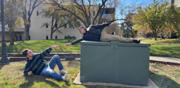

Comic/ Art

This was a comic I drew in my Comic and Sequential art class, and it was honestly one of the most fun but also time-consuming projects I've ever done, but it was very beneficial. I got to work with Photoshop a lot during that class and it showed me that working through of the class assignments allowed us to explore the Adobe programs to be the most productive with them. It also made me realize that many tools and assets from others use the program online to assist in being creative.
Game Design

In my Game Design class, we talked a lot about documenting the creative process and working to brainstorm ideas in a group setting. We also got into work in Unity, which seemed very daunting at first but at least for the level of creating a simple beta level for a world we came up with in previous assignments, it turned out to be pretty simple and fun to learn about how it all worked. On top of all the assets that are available online to be used in projects, this class showed that not being intimidated by a program like this could open up a lot of fun opportunities.
Digital Media

Being a part of the Intro to Digital Media class was hoenstly a really fun experience, getting to see and try to create different types of projects in different media's; Like the example above, it was a part of the "Remix/Emulation/Fan Art" assignment and i chose to emulate a work of art with a good friend of mine, and it was a lot of fun. Each of these assignments showed me that trying to work in different digital media's can reveal a what clicks with me as a person.